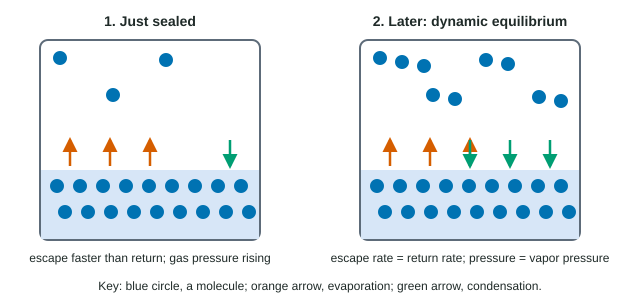

Put a glass of water on a table and leave it. A week later the glass is empty, though the water never got near 100 °C. Seal the same water in a jar and it never disappears. Both facts come from the same picture: molecules that are always moving, and attractions that hold them back.
Particles in a solid, a liquid and a gas
Each state of matter (or phase) is a different arrangement and motion of the same particles:
| State | Spacing | Arrangement | Motion | Shape and volume |
|---|---|---|---|---|
| Solid | touching | fixed, often ordered | vibrate in place | own shape, own volume |
| Liquid | touching | random, changing | slide past each other | takes the container's shape, own volume |
| Gas | far apart (mostly empty space) | random | fly freely in straight lines between collisions | fills the whole container |
Solids and liquids are both condensed: their particles touch, which is why neither can be squeezed much. A gas is mostly empty space, so it compresses easily. At room conditions the molecules of a gas are about ten molecule widths apart.
The state a substance takes at a given temperature is a contest. The particles' motion, which grows with temperature, tends to pull them apart; the attractions between them, which you met in the last two topics, hold them together. Strong attractions win at room temperature and give a solid (NaCl, quartz). Weak ones lose and give a gas (N2, CH4).
Phase changes
A phase change rearranges particles without changing what they are. Melting, vaporization (evaporation and boiling) and sublimation (solid straight to gas) all need energy, because attractions between particles are overcome. Freezing, condensation and deposition (gas straight to solid) release energy, because attractions form. In every phase change of a molecular substance, the molecules stay whole: ice, water and steam are all H2O.
Pressure
Gas particles constantly hit the walls of their container. Each hit pushes on the wall; the push per unit of area is the gas's pressure. Pressure is measured in several units that you must convert between:
1 atm = 760 torr = 760 mm Hg = 101.325 kPa
Worked example: converting pressure. A weather report gives the air pressure on a mountain as 645 torr. Express it in atmospheres and in kilopascals.
645 torr × (1 atm / 760 torr) = 0.84868 atm, which rounds to 0.849 atm (three significant figures, from 645).
0.84868 atm × (101.325 kPa / 1 atm) = 85.993 kPa, which rounds to 86.0 kPa.
Keep the unrounded value between steps; round once, at the end.
Evaporation and vapor pressure
In a liquid, molecules move at many different speeds. A few at the surface are moving fast enough, in the right direction, to break free of their neighbors' attractions and escape into the gas. That is evaporation, and it happens at any temperature, not only at the boiling point. In an open glass the escaped molecules drift away, so the water slowly disappears.
In a sealed container, the escaped molecules stay. Some of them hit the liquid surface and are captured again: condensation. At first, escape is faster than return, so the number of molecules in the gas grows. As it grows, return speeds up, until the two rates are equal (Figure 1). From then on, molecules keep escaping and returning, but the number in the gas stays constant. Two opposite processes running at equal rates, so that nothing changes overall, is called a dynamic equilibrium. (Chemical reactions can reach the same kind of balance; you will study that in Unit 7.)

The pressure of the gas above a liquid at equilibrium is the liquid's vapor pressure. Two things set it:
- Attractions between molecules. Weaker intermolecular forces let more molecules escape, so the vapor pressure is higher. A liquid with a high vapor pressure is called volatile. At 20 °C diethyl ether (dispersion and weak dipole forces) has a vapor pressure of about 440 torr, ethanol (hydrogen bonds) about 44 torr, and water (more hydrogen bonds per molecule) about 17.5 torr.
- Temperature. At a higher temperature more molecules move fast enough to escape, so the vapor pressure rises, and it rises faster and faster.
The vapor pressure does not depend on how much liquid there is, or on the size of the container, as long as some liquid remains at equilibrium. A bigger container just holds more molecules in the gas at the same pressure.
Boiling
A liquid boils when its vapor pressure equals the pressure of the air pressing on it. Then bubbles of vapor can form inside the liquid, not only at its surface. The normal boiling point is the temperature at which the vapor pressure reaches 1 atm (760 torr). Where the air pressure is lower, as on a mountain, the liquid boils at a lower temperature: at 645 torr water boils at about 95 °C.
Worked example: reading a vapor pressure curve. Ethanol's vapor pressure is 353 torr at 60 °C and 812 torr at 80 °C. Between which temperatures is its normal boiling point, and why does it boil below water's?
Step 1. The normal boiling point is where the vapor pressure is 760 torr. 760 torr lies between 353 and 812 torr, so the boiling point is between 60 °C and 80 °C (it is 78 °C).
Step 2. At every temperature, ethanol's vapor pressure is higher than water's, so ethanol reaches 760 torr first. Ethanol has one O–H group per molecule and water effectively forms more hydrogen bonds per molecule, so ethanol's molecules escape more easily.